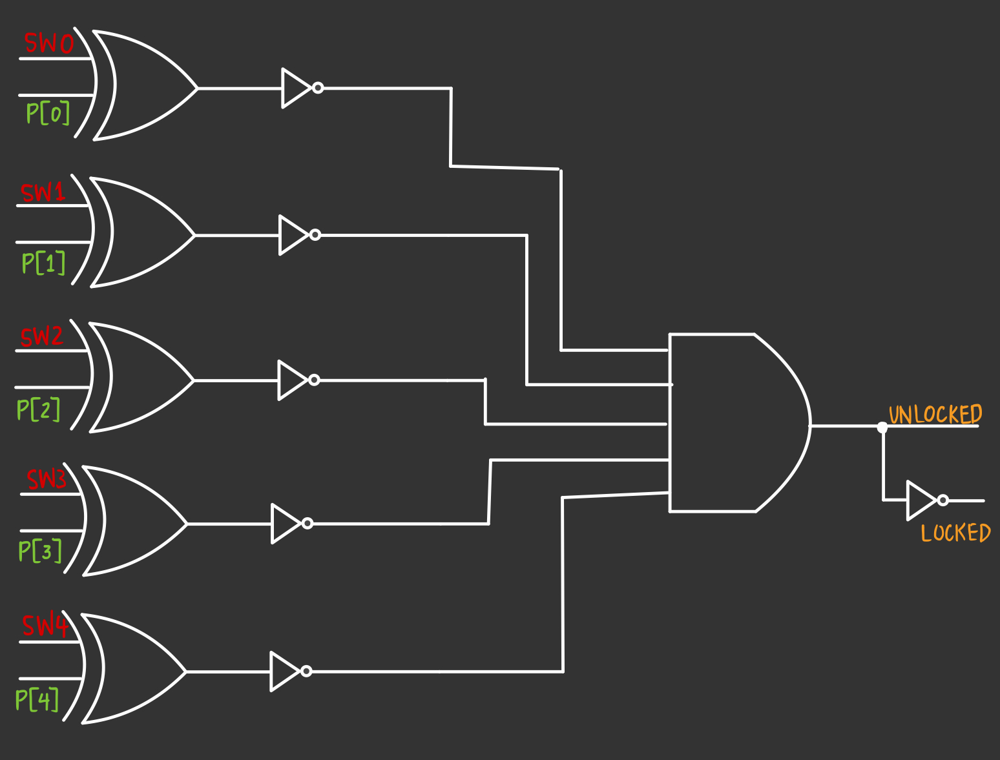
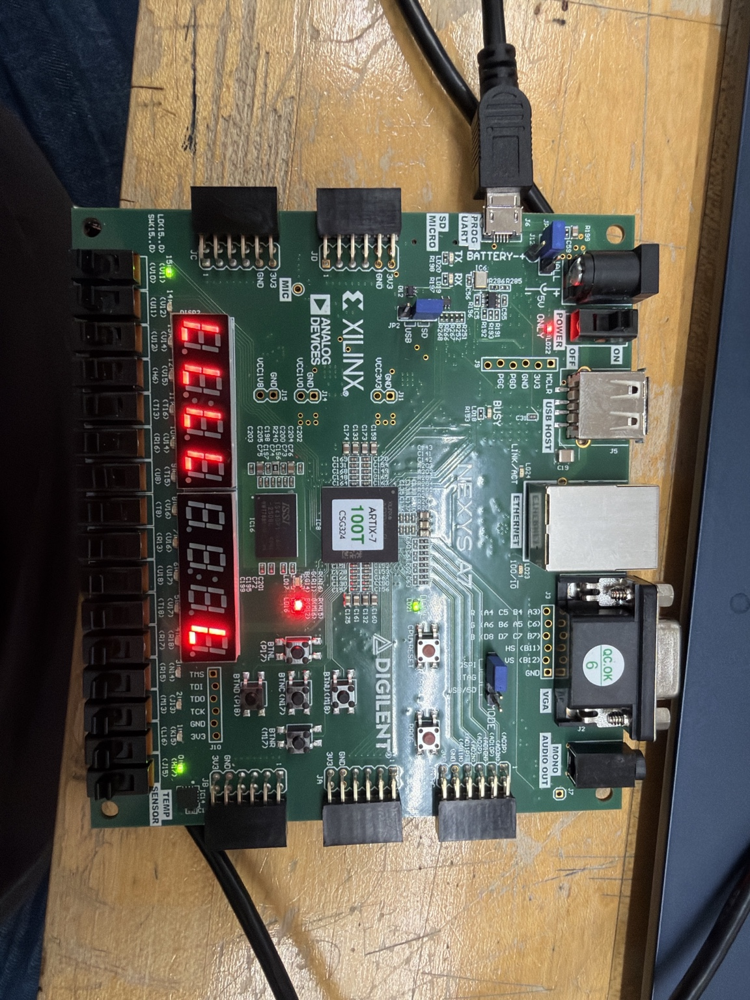

Verilog / Vivado
Programmed and debugged the Nexys A7 combination-lock logic, timed behavior and seven-segment display.
ACADEMIC PROJECT · VERILOG · NEXYS A7
A five-switch combination lock with timed password verification, LED and seven-segment status indicators, automatic relocking, and an external audible alert.

01 / OVERVIEW
I developed a digital combination lock using Verilog HDL and a Digilent Nexys A7 FPGA. Five physical switches provide password input. The design evaluates the combination after a programmed stability interval and uses the seven-segment display, LEDs, and an external buzzer for status feedback.
02 / OPERATION
The intended timing includes a one-second stable-input interval, a five-second unlocked period, and a two-second incorrect-entry buzzer alert. The rightmost seven-segment digit shows a complete L when locked and U when unlocked; the green and red LEDs provide additional feedback.
03 / DEVELOPMENT


04 / DEBUGGING
I corrected the active-low digit-enable setting so that only the rightmost digit displayed L or U.
I debugged the Verilog so U remained visible during the unlocked period.
I corrected an issue where the external buzzer sounded regardless of whether the password was correct or incorrect.
I modified the external buzzer circuit and added a diode to address unwanted reverse current.
05 / EXTENSION
I developed a three-attempt controller and worked on integrating it into the main lock design. The updated integration has not been verified on the physical FPGA. Another future improvement is allowing users to change the password without modifying and reprogramming the Verilog.
06 / VIDEO
SKILLS IN PRACTICE
Here is how the tools and techniques from my Technical Skills section were applied to this project.
Programmed and debugged the Nexys A7 combination-lock logic, timed behavior and seven-segment display.
Connected the external buzzer and added a diode to address unwanted reverse current.